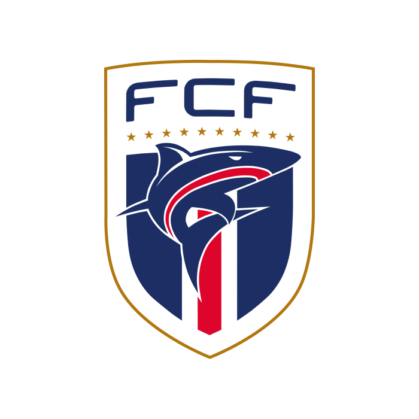
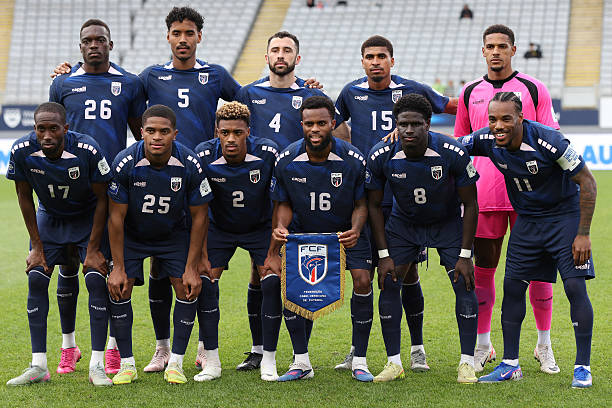
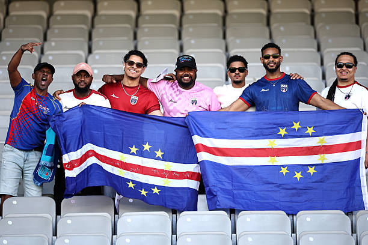

Cape VerdeThe Cape Verde national football team (recognized as Cabo Verde by FIFA) represents Cape Verde in men's international football, and is controlled by the Cape Verdean Football Federation.
-

Emblem
-

Nickname(s)
Tubarões Azuis (Blue Sharks)
Crioulos (Creoles)
-
Association
Federação Caboverdiana de Futebol (FCF)
FSJ
-
Confederation
CAF
Africa
-

FIFA code
CPV
-

Appearances
1
first in 2026
-

Best result
TBD
2026
2026
-

Bubista
Head coach
-

1. Vozinha
Goalkeeper
Born - June 3, 1986
Aged 40
Caps 90
Club - Chaves (Portugal)
-

12. Márcio Rosa
Goalkeeper
Born - February 23, 1997
Aged 29
Caps 11
Club - Montana (Bulgaria)
-

23. CJ dos Santos
Goalkeeper
Born - August 24, 2000
Aged 25
Caps 1
Club - San Diego FC (USA)
-

2. Stopira
Defender
Born - May 20, 1988
Aged 38
Caps 61
Club - Torreense (Portugal)
-

3. Diney
Defender
Born - January 17, 1995
Aged 31
Caps 32
Club - Al Bataeh (UAE)
-

4. Roberto Lopes
Defender
Born - June 17, 1992
Aged 33
Caps 45
Club - Shamrock Rovers (Ireland)
-

5. Logan Costa
Defender
Born - April 1, 2001
Aged 25
Caps 28
Club - Villarreal (Spain)
-

13. Sidny Lopes Cabral
Defender
Born - September 18, 2002
Aged 23
Caps 11
Club - Benfica (Portugal)
-

22. Steven Moreira
Defender
Born - August 13, 1994
Aged 31
Caps 20
Club - Columbus Crew (USA)
-

24. Wagner Pina
Defender
Born - November 3, 2002
Aged 23
Caps 14
Club - Trabzonspor (Turkey)
-

25. Kelvin Pires
Defender
Born - June 5, 2000
Aged 26
Caps 6
Club - SJK (Finland)
-

6. Kevin Pina
Midfielder
Born - January 27, 1997
Aged 29
Caps 31
Club - Krasnodar (Russia)
-

7. Jovane Cabral
Midfielder
Born - June 14, 1998
Aged 27
Caps 29
Club - Estrela Amadora (Portugal)
-

8. João Paulo
Midfielder
Born - May 26, 1998
Aged 28
Caps 41
Club - FCSB (Romania)
-

10. Jamiro Monteiro
Midfielder
Born - November 23, 1993
Aged 32
Caps 55
Club - PEC Zwolle (Netherlands)
-

11. Garry Rodrigues
Midfielder
Born - November 27, 1990
Aged 35
Caps 61
Club - Apollon Limassol (Cyprus)
-

14. Deroy Duarte
Midfielder
Born - July 4, 1999
Aged 26
Caps 33
Club - Ludogorets Razgrad (Bulgaria)
-

15. Laros Duarte
Midfielder
Born - February 28, 1997
Aged 29
Caps 20
Club - Puskás Akadémia (Hungary)
-

16. Yannick Semedo
Midfielder
Born - December 29, 1995
Aged 30
Caps 11
Club - Farense (Portugal)
-

17. Willy Semedo
Midfielder
Born - April 27, 1994
Aged 32
Caps 38
Club - Omonia (Cyprus)
-

18. Telmo Arcanjo
Midfielder
Born - June 21, 2001
Aged 24
Caps 16
Club - Vitória de Guimarães (Portugal)
-

21. Nuno da Costa
Midfielder
Born - February 10, 1991
Aged 35
Caps 9
Club - İstanbul Başakşehir (Turkey)
-

26. Hélio Varela
Midfielder
Born - May 3, 2002
Aged 24
Caps 21
Club - Maccabi Tel Aviv (Israel)
-

9. Gilson Benchimol
Forward
Born - December 29, 2001
Aged 24
Caps 21
Club - Akron Tolyatti (Russia)
-

19. Dailon Livramento
Forward
Born - May 4, 2001
Aged 25
Caps 22
Club - Casa Pia (Portugal)
-

20. Ryan Mendes
Forward (captain)
Born - January 8, 1990
Aged 36
Caps 98
Club - Iğdır (Turkey)